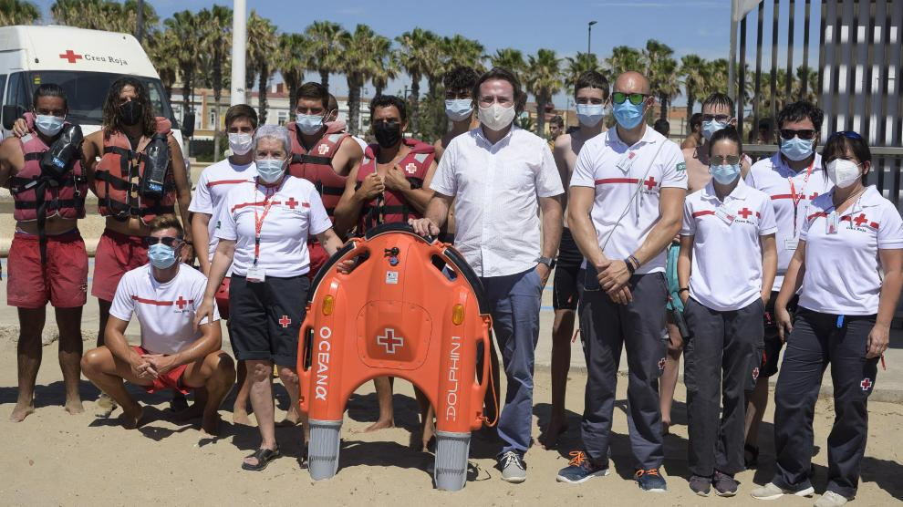

NOTICIAS
Dónde comer en la playa de San Juan en Alicante: de los arroces y la cocina tradicional a los sabores argentinos.
La Comunidad Valenciana es una de las regiones elegidas cada año por multitud de turistas nacionales y extranjeros
para pasar sus días de vacaciones en alguna de sus magníficas playas bañadas por el Mediterráneo, como es el caso
de la playa de San Juan.
Kilómetros de arena blanca y fina y aguas transparentes, esta es una de las playas más populares de Alicante por
su extensión, su climatología y por la posibilidad de practicar multitud de deportes acuáticos, como el surf o el
wind surf.
Especialistas en arroces
Pero, sin duda, otro de los atractivos de esta playa, que se extiende desde las playas del Campello hasta el Cabo
de la Huerta, es la gastronomía. Existen multitud de establecimientos donde disfrutar de una buena paella o de
un plato de pescado fresco y uno de los más recomendados por los consumidores es Casa Domingo.
Uno de los establecimientos más míticos de esta playa reconocido por sus arroces y gastronomía tradicional.
"Durante más de sesenta años de historia, el Restaurante Casa Domingo, ha sabido cómo hacer un buen arroz, sabe
lo que más le gusta a sus clientes y ofrece, en su amplio menú, esos platos que apetece tomar mirando y escuchando
el romper de las olas del Mediterráneo alicantino", así se define en su propia página web.
Las playas de Valencia estrenan un sistema de rescate de bañistas por control remoto pionero en España

El Ayuntamiento de Valencia y Cruz Roja han escenificado este martes un simulacro de salvamento en la playa de la
Malvarrosa, en el que se ha incorporado un dispositivo de rescate por control remoto pionero en España, una tabla
de socorro acuática teledirigida desde la orilla del mar.
Esta puede acudir en solitario o transportando al socorrista hasta la persona en peligro con más rapidez y menos cansancio
y trasladar a ambos a tierra, y usa para ello tecnología renovable y no contaminante, llegando a una velocidad de diez
kilómetros por hora.
Tiene un alcance efectivo de 500 metros, una autonomía de 30 minutos y una capacidad de carga de 250 kilos, según el
Ayuntamiento, que añade que este sistema forma parte del servicio de asistencia y socorrismo que se activó el 1 de junio y
finalizará el 15 de septiembre, con un operativo de 168 personas en las postas localizadas a lo largo de los 24 kilómetros
de playa urbana que van desde la Malvarrosa hasta el Perellonet.
El nuevo dispositivo se llama CRAS (control remoto acuático de salvamento) y es el único en España, según las
mismas fuentes. La tabla teledirigida supone menor gasto de energía y menos fatiga para los equipos de rescate,
especialmente cuando el estado del mar no es favorable, lo que les permite proporcionar una atención de más calidad.
Además, el artefacto flotante es eléctrico, utiliza tecnología renovable no contaminante, y esto ayuda a reducir la huella de ozono.
El concejal de Playas, Calidad Acústica y del Aire, Giuseppe Grezzi, ha asistido al ejercicio de simulación junto
con la presidenta de Cruz Roja en València, Nieves Dios, y la directora local de Socorros y Emergencias de Cruz Roja
en Valencia, Macarena Lozano. Los tres han puesto de relieve la utilización de la tecnología para mejorar el
salvamento marítimo.
Avistan un cetáceo en las aguas del Puerto de Valencia y las playas de Pinedo
El Puerto de Valencia y la costa de Pinedo han sido escenario este sábado del avistamiento de un cetáceo que,
alrededor del mediodía, ha sido captado en las aguas cercanas a la ciudad.
El animal se ha dejado ver sobre las 12 horas en las aguas del puerto, donde el fotógrafo de la Autoridad Portuaria
ha podido capturar la escena del cetáceo emergiendo del mar, con los barcos del puerto de telón de fondo.
Valenciaport ha compartido la instantánea en sus redes sociales, en un mensaje en el que apunta que no han llegado
a identificar exactamente la especie del cetáceo y anima a aportar información para precisar mejor qué tipo de
invitado marino han inmortalizado.
Esta es la playa española que más buscan los madrileños para las vacaciones de verano
Algo indudable es que la costa mediterránea es uno de los destinos favoritos de los madrileños, que dejando atrás el bullicio
de la capital buscan un lugar donde disfrutar de unos días de relax, pero sobre todo de la playa. En este sentido, los datos
recogidos por la agencia Eskimoz, demuestran que la playa de Poniente, de Benidorm es la favorita por los madrileños.
Tras Benidorm, las playas de Alicante también generan gran interés entre la población de la Comunidad de Madrid, mientras que
la Malvarrosa, playa de referencia en Valencia, es la tercera más buscada.
Pero... ¿Qué buscan los valencianos?
Respecto a las costas que buscan los valencianos, los residentes en la Comunidad Valenciana quieren playas lejos de su
territorio, muchas veces masificado por la visita de turistas de otras comunidades autónomas. Bolonia (Cádiz) y la Playa
del Pirata (Gran Canaria) están por encima de su media habitual de búsquedas, mientras que la Playa de Pinedo, es la
única local que destaca.
Por otro lado, el control de la pandemia y el descenso de casos por coronavirus relanzan el turismo en España este verano,
según Eskimoz, y no solo a nivel internacional, sino que también en términos nacionales. De ahí que haya numerosas búsquedas
relacionadas con el turismo nacional en las diferentes comunidades autónomas.

: summer-gt@gmail.com
: 628349597